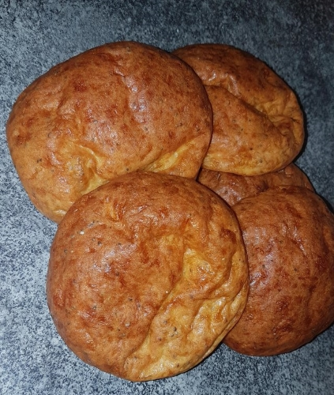

Cheesebuns Recipe

A delicious appetizer that can also be used as burger buns!
- 220 g Mozzarella Grated
- 3 Eggs Large
- 5 g Baking powder
- 20 Psyllium Husk Powder
- Combine all ingredients in a mixing bowl, mix well
- Preheat oven to 190C
- Allow to stand for 15-20 mins
- Divide dough into 4, place on baking sheet
- Bake at 190C for 15-20 mins until golden brown
- Allow to cool & serve